RADAR España

Visualizar el descubrimiento
RADAR es el programa global de Spotify que impulsa a artistas emergentes en más de 50 países. España se convirtió en el único del mundo con su propia portada exclusiva. Creamos un sistema visual que celebra el talento emergente—algo más que una lista, un escaparate cultural. Diseñamos un lenguaje gráfico que traduce la energía cruda del nuevo talento en formas, colores y ritmo visual. Un branding que anticipa lo que viene, que captura ese momento justo antes de que todo explote.
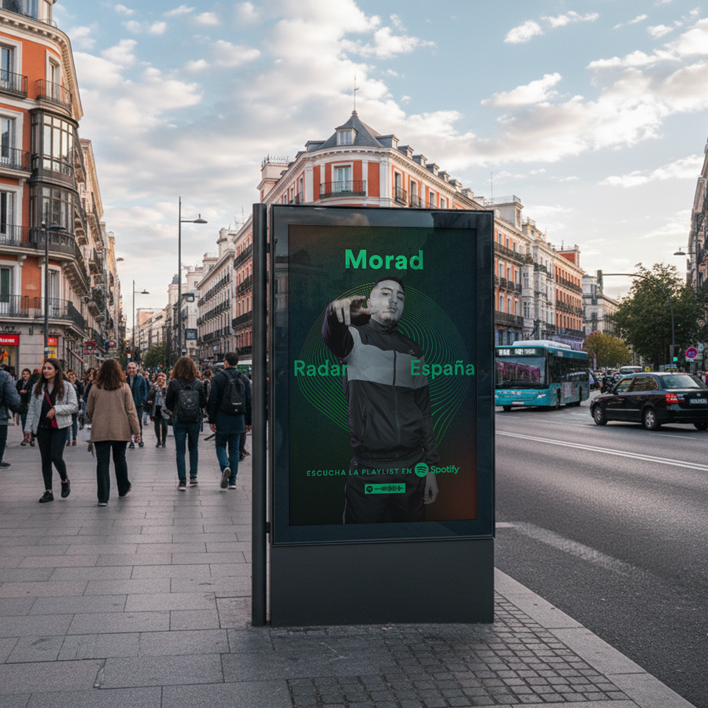
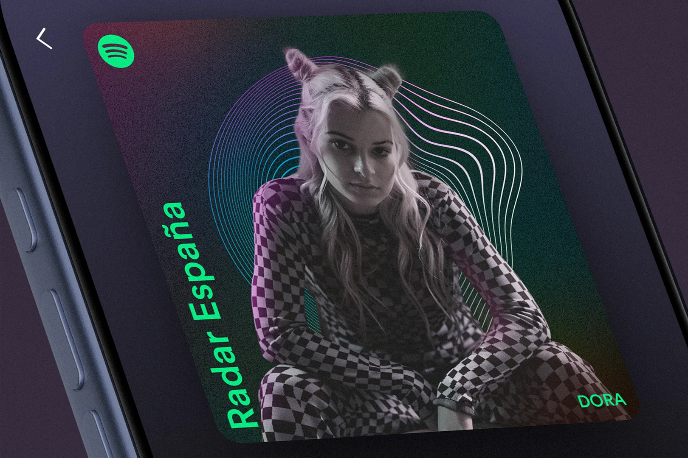
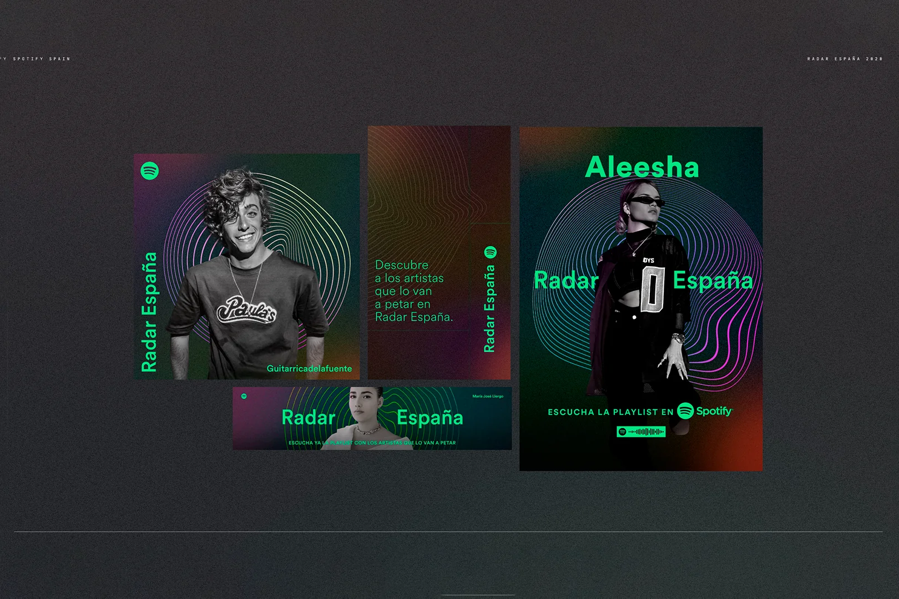
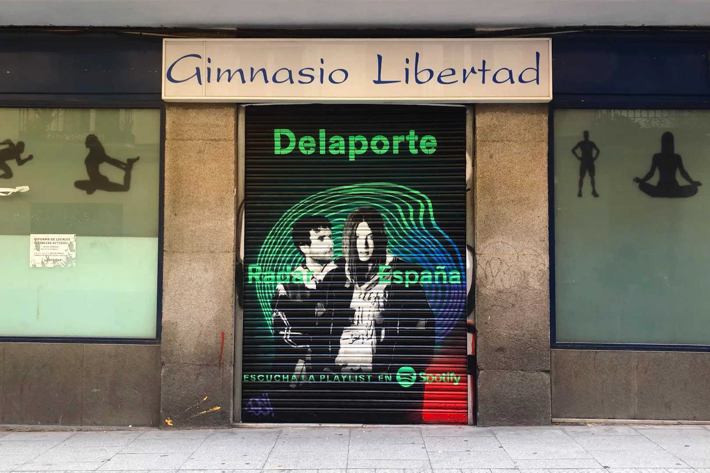
El Rey del Cachopo
Diseñar lo complejo
Podcast original de Spotify Studios que cuenta la historia de César Román—empresario, periodista y acusado del asesinato de su pareja Heidi Paz. Uno de los casos más mediáticos de España. Tomamos prestada la estética de las carnicerías—cortes, secciones, anatomía—para visualizar las múltiples facetas de César Román. No ilustramos el crimen, sino la mente. Creamos un sistema gráfico que disecciona la psicología del personaje en fragmentos visuales. Cada pieza del diseño funciona como una capa más del misterio.
Fiestas de Pueblo
Construir un imaginario
Spotify tenía listas para todo menos para algo fundamental en nuestra cultura: las fiestas de pueblo. Colaboramos con seis de las principales orquestas de España—Panorama, El Combo Dominicano, Zodiako, Pekado, Buda Show y Top Lider—para crear la playlist definitiva. Pero lo importante fue el lenguaje visual—capturamos la estética única de las verbenas españolas, las luces de neón, el montaje rápido de los escenarios, la energía colectiva de la plaza. Un sistema gráfico que no romantiza sino que celebra lo popular con honestidad y frescura.
RED
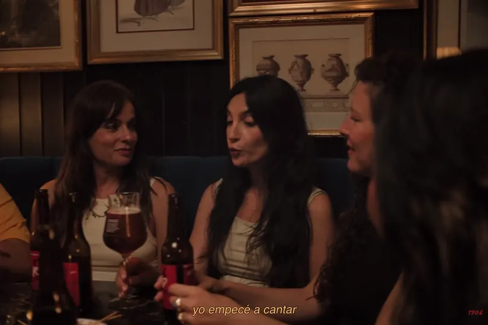
Traducir a una visionaria
Documental sobre Cris Trenas, cofundadora de Little Spain y una de las figuras más influyentes del panorama creativo español. Su visión ha marcado videoclips icónicos para Bad Gyal, Nathy Peluso, Rosalía. El reto: capturar visualmente su proceso creativo, esa forma única de ver el mundo. Construimos un sistema gráfico que dialoga con su estética—crudo, directo, sin filtros. Paralelamente, trabajamos el rebranding completo de RED. Un lenguaje visual que funciona tanto para marca como para documental, unificando ambos bajo la misma visión.
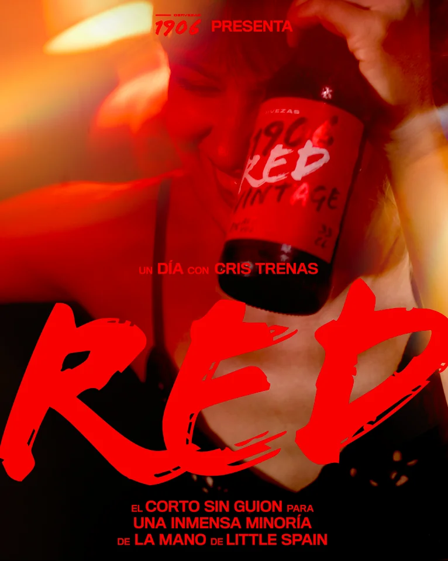
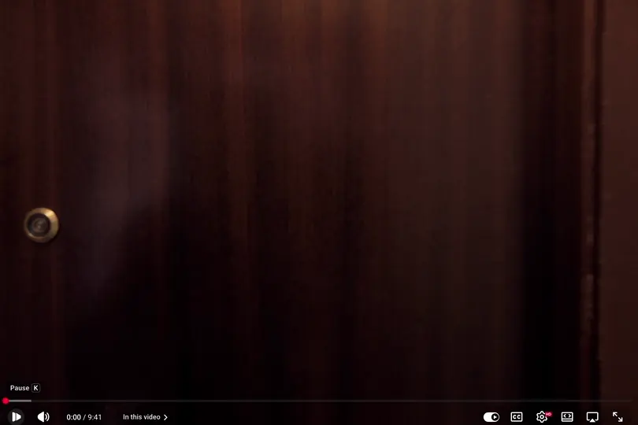
Bingo Wrapped
Gamificar los datos
Wrapped es el resumen anual personalizado de Spotify que muestra tus estadísticas musicales del año. Para España, lo convertimos en experiencia colectiva. Tomamos la mecánica del bingo—algo visceral, compartido, lleno de tensión—y la fusionamos con los datos de escucha. Diseñamos un sistema visual que traduce estadísticas en cartones, algoritmos en emoción. Cada elemento gráfico trabaja para hacer los datos más humanos, más celebrables, más españoles. De lo personal a lo comunitario sin perder el ritmo.
Lo que necesitas
Hacer visible la confianza
Campaña de reposicionamiento para Milanuncios, el marketplace líder de compraventa entre particulares en España. El objetivo: reforzar la percepción de seguridad y garantía. Dirigimos el arte de la campaña enfocándonos en hacer tangible algo abstracto: la confianza. Cada decisión visual—composición, color, ritmo—construye credibilidad. No vendemos productos, diseñamos la sensación de encontrar exactamente lo que buscas con la garantía de que todo está en orden. Un lenguaje visual directo, sin artificios.
EQUAL x Originals
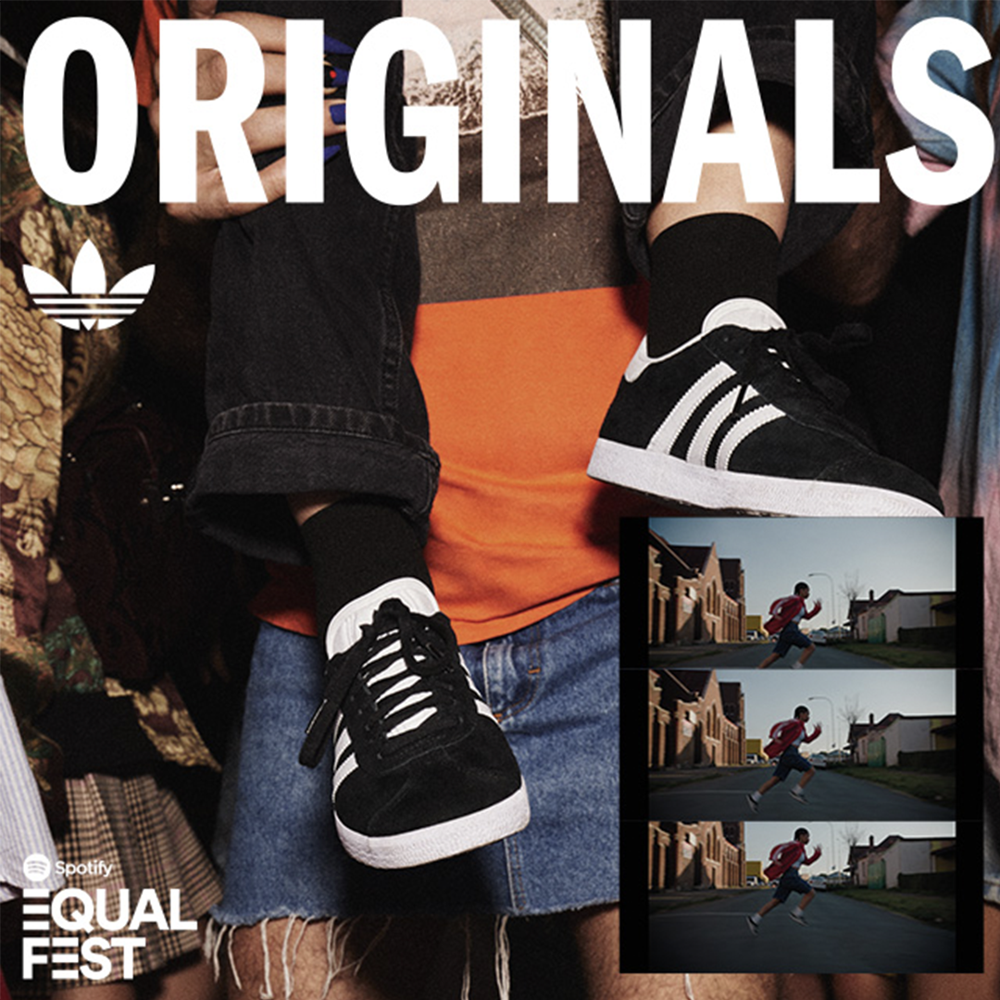
Capturar lo efímero
EQUAL es el programa global de Spotify que amplifica a artistas mujeres en la música. Cuando se asoció con Adidas para el EQUAL Fest, nos pidieron algo casi imposible: crear una campaña en el día más emocionante del año para estas artistas. Dirigimos una sesión fotográfica masiva capturando decenas de asistentes con sus zapatillas. No buscamos perfección sino verdad—nervios, alegría, prisas, emoción pura. Diseñamos un sistema de captura que prioriza el momento sobre la pose. La fotografía como documento, como testigo directo.
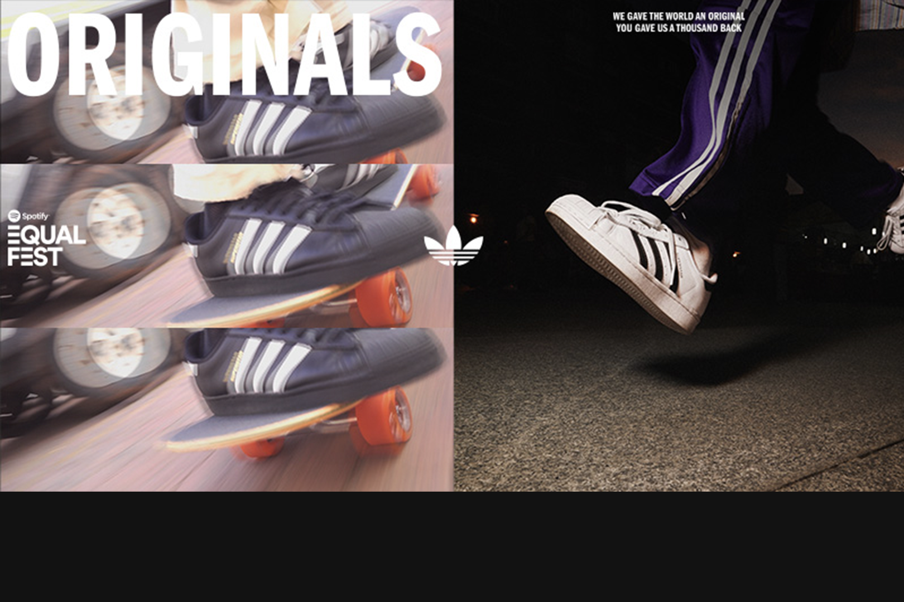
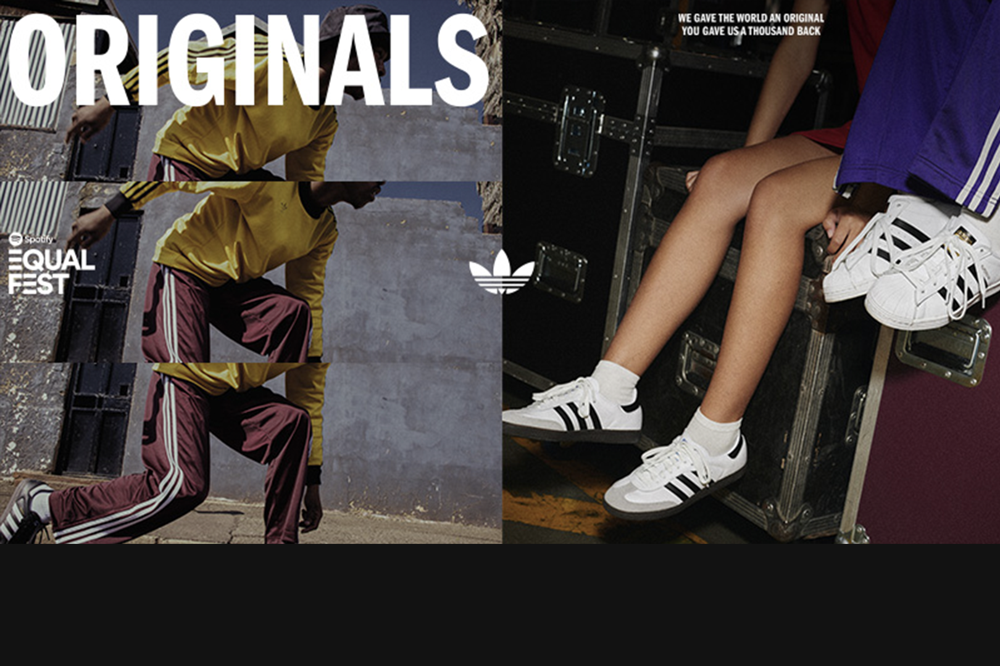
Estopify
Convertir el chiste en realidad
Estopa bromeaba con esto desde siempre: "Estopify". En 2024, su disco debut cumplió 25 años. Decidimos hacer lo impensable: convertir el chiste en un hub real dentro de Spotify donde toda su historia—discos, vídeos, caras B, rarezas—cobra vida en un solo espacio. El diseño abraza el humor del concepto pero lo ejecuta con la seriedad que merece un legado de 25 años. Lo presentamos en un evento sorpresa en Barcelona. No una campaña, un regalo.
Podcast Live Sessions
Visualizar la inmediatez
Nuevo formato de Spotify: podcasts grabados en directo frente a audiencia en vivo. Un híbrido que fusiona la intimidad del estudio con la energía del escenario. Creamos una identidad visual que captura esa doble naturaleza. El sistema gráfico trabaja con la tensión entre control y espontaneidad, entre producción y momento. Diseñamos para un formato que está pasando ahora, sin red de seguridad. Del micrófono al público sin filtros.
Endless Summer
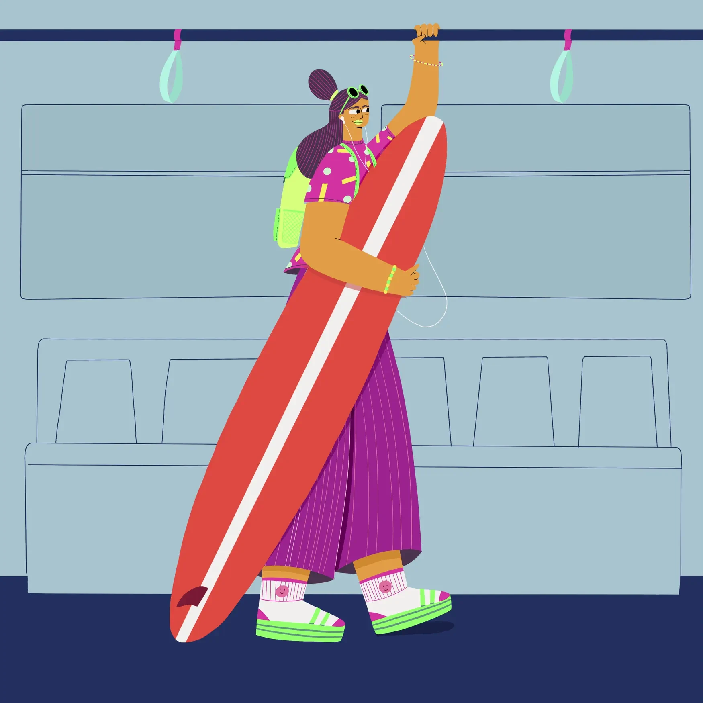
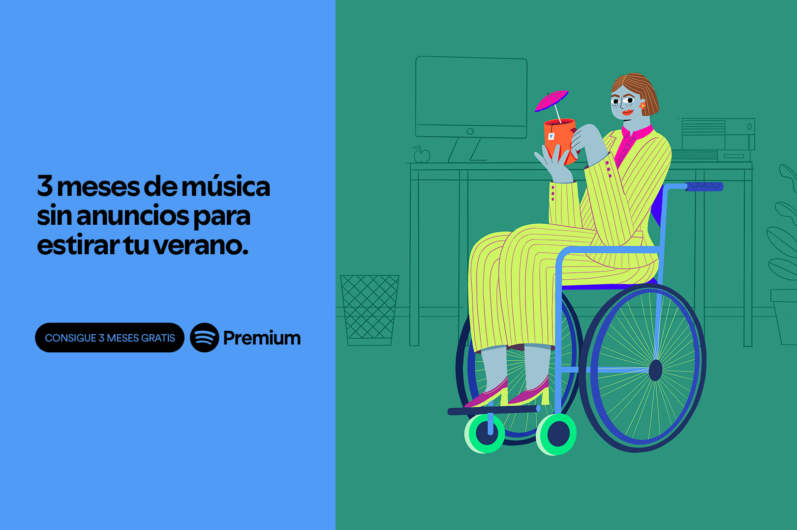
Siempre verano
Campaña para Spotify Premium en el sur de Europa. En el Mediterráneo, el verano no es una estación, es un estado que se resiste a terminar. Conceptualizamos "Endless Summer" para cubrir el Q3, capturando esa inercia del sol que ignora el calendario. Trabajamos junto a la ilustradora Shut up Claudia para visualizar escenas cotidianas de un estío infinito. Un sistema gráfico que traduce la luz y el color en una narrativa visual sin fecha de caducidad.
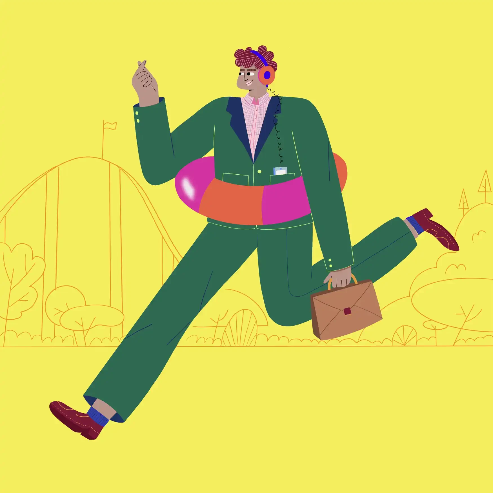
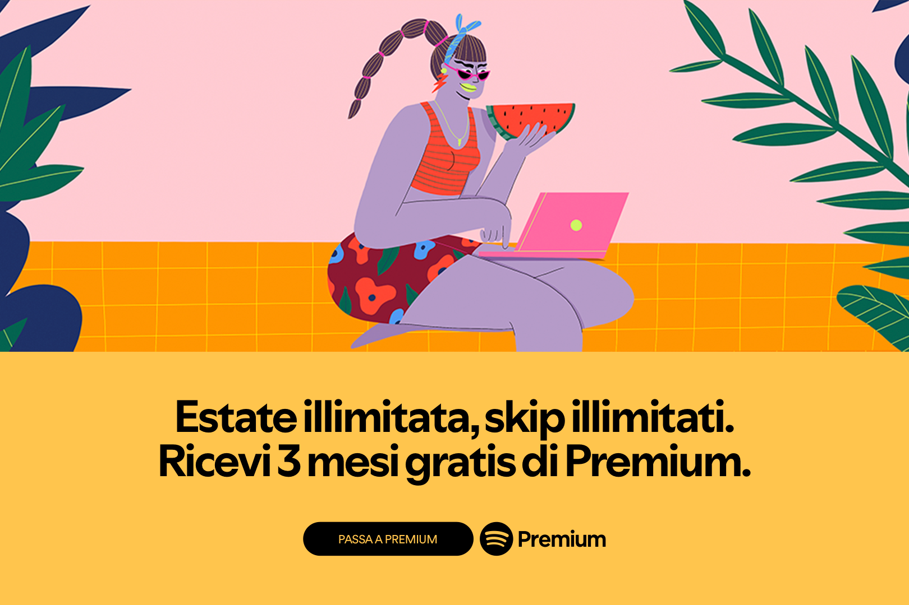
Los Xavales
Escalar sin perder la calle
Carlos y Tuti son el canal de música urbana más influyente de España—reacciones, entrevistas con C.Tangana, Yung Beef o Rosalía, podcast en Radio Primavera Sound y su propio festival. En 2023, con 82.000 suscriptores y creciendo, la marca tenía que crecer con ellos. Construimos un sistema de identidad que mantiene lo que los hace únicos—esa autenticidad de barrio, de dos colegas que hablan de música sin filtros—pero preparada para escalar. Un lenguaje visual que respira escena urbana española sin caer en los clichés del género.
Rebranding HUE
La luz como identidad en un mundo monocromático
En un panorama tecnológico dominado por la sobriedad del gris, el plata y el blanco, este rediseño devuelve el protagonismo al activo más potente de Hue: el color. Frente a la frialdad de la domótica convencional, la propuesta utiliza el negro como lienzo base para permitir que la luz emerja de forma orgánica y reconocible. No se trata solo de iluminar un dispositivo, sino de bañar la oscuridad con una atmósfera vibrante y sofisticada, demostrando que la verdadera esencia de la marca no reside en el hardware, sino en la capacidad de transformar espacios a través del espectro cromático.
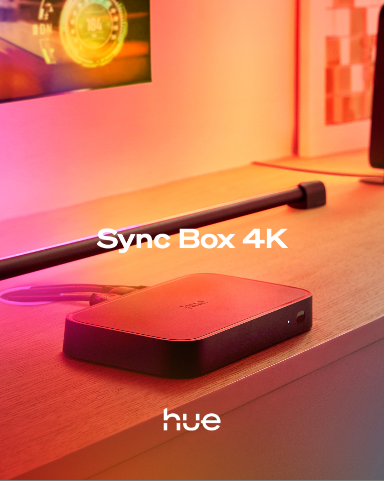
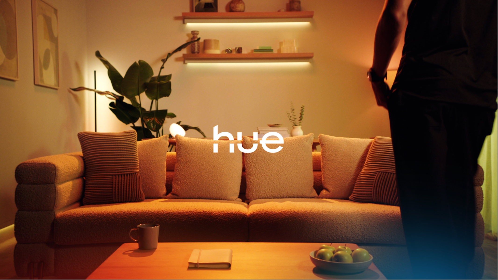
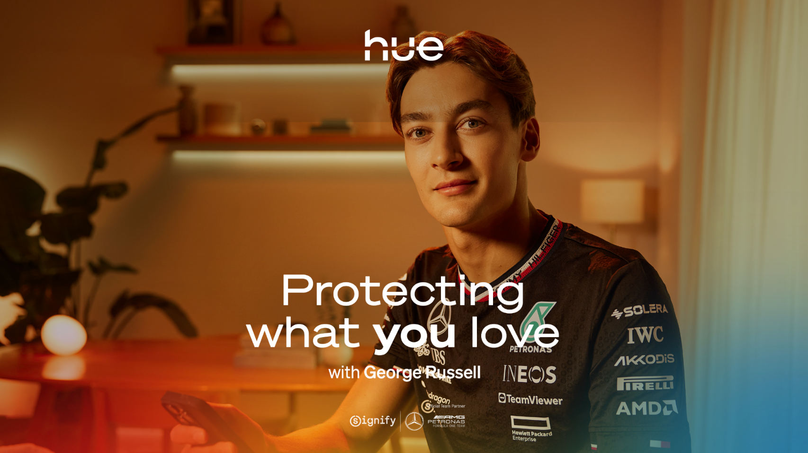